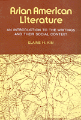

<body bgcolor="#FFFFFF" text="#000000" link="#0000FF" vlink="#CC0000" alink="#CC0000"><center><hr width="350" size="1" align="center" noshade>Focuses on the experience of Asians in America from the immigrants of the 1840s to the present<hr width="350" size="1" align="center" noshade><p><a href="https://cdcshoppingcart.uchicago.edu/Cart/ChicagoBook.aspx?ISBN=9780877222606&&PRESS=temple" target="_top">Buy this book!</a> | <a href="https://cdcshoppingcart.uchicago.edu/Cart/Cart.aspx?PRESS=temple" target="_top">View Cart</a> | <a href="https://cdcshoppingcart.uchicago.edu/Cart/Cart.aspx?PRESS=temple" target="_top">Check Out</a></p><p></p></center><!--none//--><h1>Asian American Literature</h1>
<H2>An Introduction to the Writings and Their Social Context</H2>
<h3>Elaine H. Kim</h3>
<P>cloth 0-87722-260-6 $34.95, Jun 82, <FONT COLOR=#990033>Out of Print</FONT>
<br>paper 0-87722-352-1 $35.95, Feb 84, <FONT COLOR=#990033>Available</FONT>
<br>Electronic Book 1-43990-435-9 $34.95 <FONT COLOR=#990033>Out of Print</FONT>
<BR> 363 pp
</P><BLOCKQUOTE><I>"Kim tracks major themes, analyzes stereotypes and discusses the search for social identity, women's roles, and responses to America's racism."</I>
<br>&#151<b><I>New York Times Book Review</I></b><I></I></BLOCKQUOTE>
<p>An introduction to the literary works of Chinese-Americans, Japanese-Americans, Filipino-Americans, and Korean-Americans, this book focuses on the self-images and social contexts of the nineteenth-century immigrants, their descendants, and the Americanized writers of today.
<p>Although the book examines the novels, autobiographies, poems, and plays themselves, the social history of Asians in American is a significant backdrop&#151as Maxine Hong Kingston herself argues it should be. These racially distinctive Americans have confronted in their lives and writings American stereotypes of the "Oriental," racial discrimination, and the cultural gulf between East and West.
<p>After a chapter on Fu Manchu, Charlie Chan, and other Anglo-American caricatures of Asians, the author turns to a discussion of the first immigrant writers, many of whom were educated aristocrats playing the role of cultural ambassadors, and then to the less privileged, more socially critical generations of writers who followed.
<p>From works like <I>Flower Drum Song</I>, <I>Eat a Bowl of Tea</I>, <I>The Woman Warrior</I>, <I>China Men</I>, and a host of lesser-known writings, the author shows how portrayals of Chinatown, the Japanese-American family, and the roles of all the Asian-American women and men have changed. Drawing on her personal interviews with Asian-American writers, Kim also conveys their attitudes towards their own group, other Asian-Americans, other racial minorities, and white Americans&#151a complex mix of bitterness, acceptance, and militance.
<BR>&nbsp;<h2>Reviews</h2>
<p><I>"Kim does an excellent job. The book is a comprehensive view of what has been going on in both the social and literary histories of Asian America."</I>
<br>&#151<b>Luis Francia</b>, <I>Asiaweek Literary Review</I>
<BR>&nbsp;<H2>About the Author(s)</H2>
<table><tr><td valign="top"><img src="/tempress/authors/274_au.gif" height="90" width="75"></td><td width="100%" valign="middle"><p><b>Elaine H. Kim</b> is Associate Professor of Ethnic Studies at the University of California, Berkeley. She directs the Korean Community Center of Oakland and Asian Women United (California).</P></td></tr></table>
<BR><H2>Subject Categories</H2>
<p><A HREF="/tempress/literature.html" TARGET="_top">Literature and Drama</a>
<BR><A HREF="/tempress/asian_amer.html" TARGET="_top">Asian American Studies</a>
</p>
<p align="center"><a href="https://cdcshoppingcart.uchicago.edu/Cart/ChicagoBook.aspx?ISBN=9780877222606&&PRESS=temple" target="_top">Buy this book!</a> | <a href="https://cdcshoppingcart.uchicago.edu/Cart/Cart.aspx?PRESS=temple" target="_top">View Cart</a> | <a href="https://cdcshoppingcart.uchicago.edu/Cart/Cart.aspx?PRESS=temple" target="_top">Check Out</a></p><p><font face="Arial" size="1"><a href="copyright.html" onMouseOver="window.status='Web Copyright Policy';return true;" onMouseOut="window.status=''" title="Web Copyright Policy">&copy;</a> 2015 <a href="http://www.temple.edu" target="new" onMouseOver="window.status='Link to Temple University home page';return true;" onMouseOut="window.status=''" title="Link to Temple University home page">Temple University</a>. All Rights Reserved. http://www.temple.edu/tempress/titles/274_reg.html</font></p>